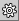
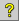
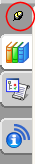
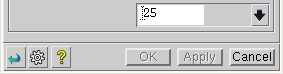

The following buttons are relocated:
Pin
Reset
 Show Menu/ Hide Menu
 Help
Resource bar and QuickPick dialog box
The Pin button is now located at the top of the Resource bar.

The Pin button is removed from the QuickPick dialog box. You can fix the location of the QuickPick dialog box using the new Lock Dialog Position selection preference.
Dialog boxes
The Reset , Show Menu/ Hide Menu , and Help buttons are now located at the lower left-hand corner at the bottom of the dialog box.

|
Note |
Buttons appear in a dialog box only when their function is supported by the command. |